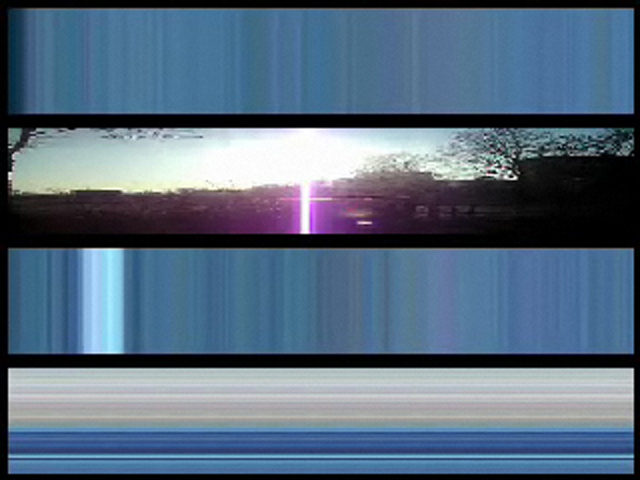
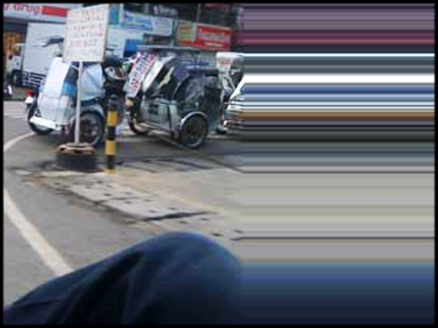
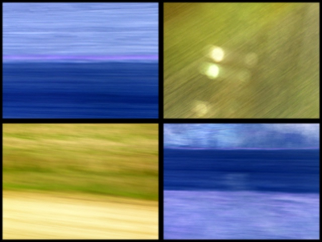

The Weather Or Your Memories is a series of live-processing improvisations. Each piece uses material captured via mobile phone while in transit in various cities around the world. For each city, a sound and video montage considers the sublimated drama of habitual spaces.



The Weather or Your Memories
2007
2007
Thanks:
David Feinberg, Alex Berman, Rodrigo Minelli, Lucas Bambozzi, Elisa Marques.